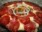

Pizza
Pizza
 Pizza
Pizza
Pizza é uma preparação culinaria que consiste em um disco de massa fermentada de farinha de trigo, regado com
molho de tomate e coberto com ingredientes variasdos que normalmente incluem algum tipo de queijo, carnes
preparadas ou defumadas e ervas, normalmente orégano ou manjericão, tudo assado em forno.
 Alguns tipos de sabores
Alguns tipos de sabores
A variedade de coberturas que se pode colocar uma pizza é quase infinita, entretanto, algumas
preparações são tradicionais e tem fiéis seguidores:
 Margherita
Margherita
 Mussarela
Mussarela
 Portuguesa
Portuguesa
 Calabresa
Calabresa
 Peperoni
 Quatro queijos
Quatro queijos Bacon
Bacon
Fontes
http://pt.wikipedia.org/wiki/pizza
http://www.pizza.it
http://en.wikipedia.org/wiki/gistory_of_pizza
www.pizzaonline.com.br